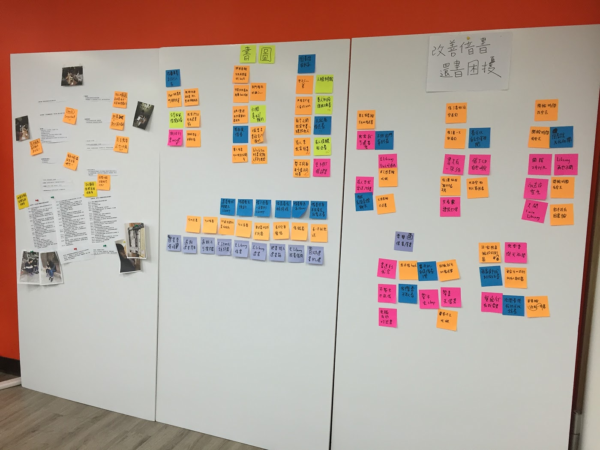
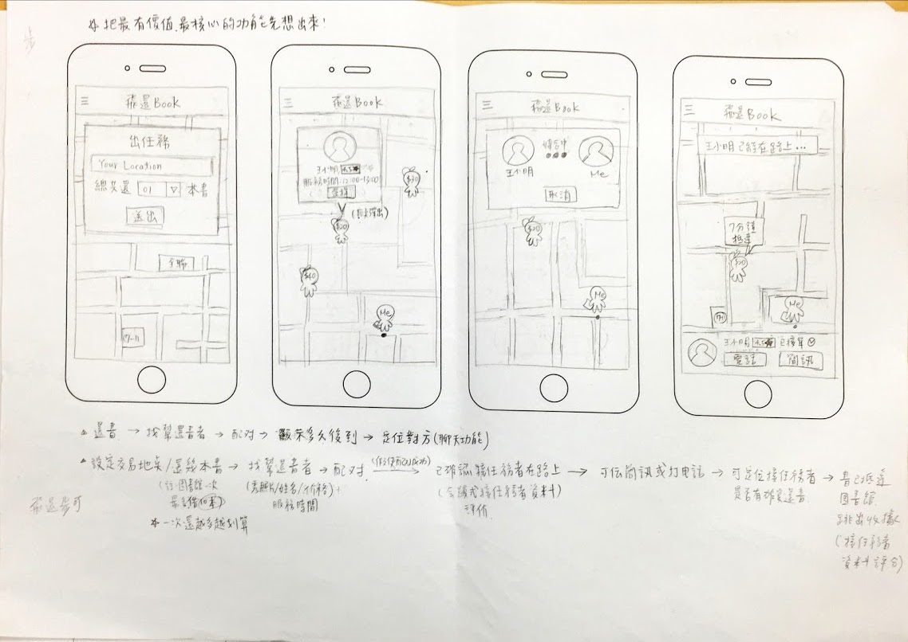
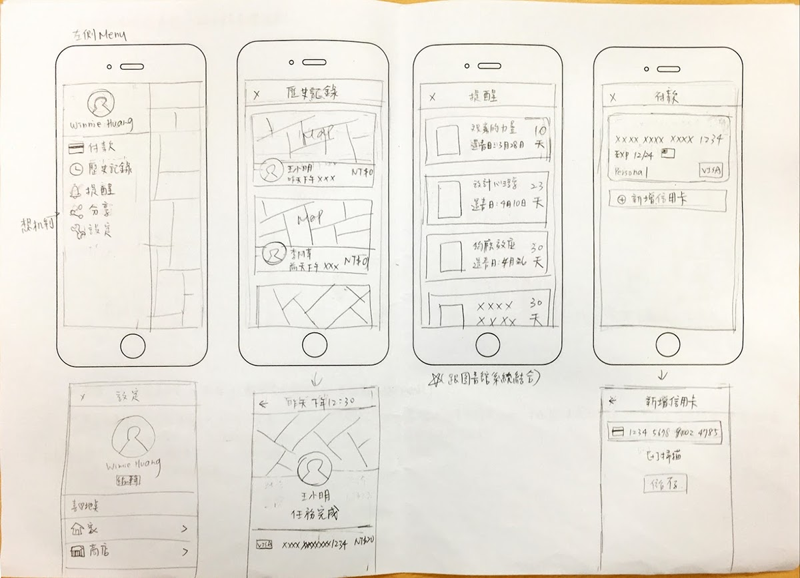
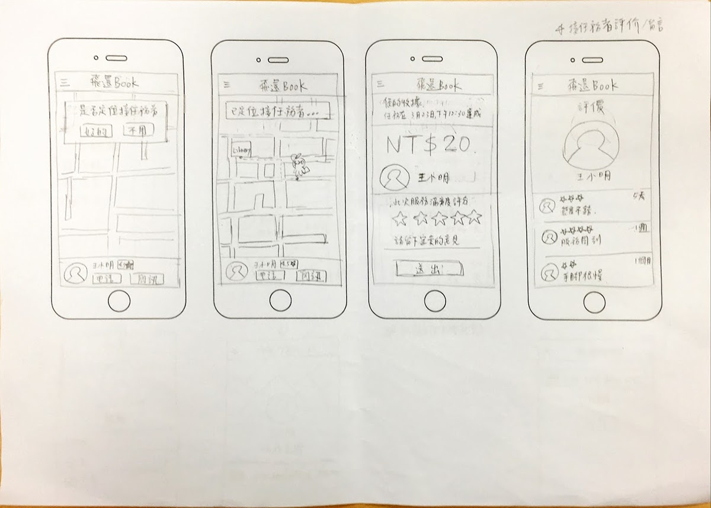
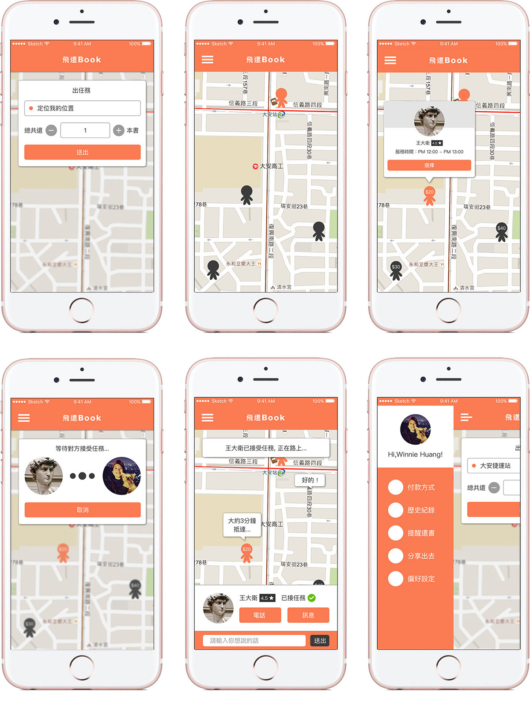

[Project Brief]
因為平常不愛買書的我，喜歡先到書店看有什麼好書，再到圖書館借書。但發現圖書館的App非常難用，所以我想要改造它。於是去做了使用者研究，發現大家對於到圖書館「還書」這件事情很困擾，常常因為忙碌，沒時間到圖書館借書，所以常常逾期還書，所以我決定打造一個專門幫忙「還書」的App，讓順路的人(剛好要去圖書館的人)可以順便的幫忙還書，並且取名為「飛還Book」。
If I want to read some books, I will go to bookstore to look for what I want to read, or borrow in library, because I don't like to buy books. Therefore, I found app for library its very hard to use, so I want to redesign that.Then, I go to do user research, and find that people is hard to return books because they're so busy that no time go to library to return books. So, I decide to design a app that can customized return books, even can let somebody who just go library helping incidentally return books, and I name it [飛還Books].
並且寫下我的Statement： in order to __改善借書/還書困擾_________(vision) our product will solve__不愛花錢買書且愛閱讀者________(target audience's) problem of ___借書還書要特地跑到圖書館,不夠便利導致常常逾期借還書______(user problem) by giving them_________隨時隨地借書/還書______________(strategy) We will know if our product works, when we see___________大家變得愛看書____________(goal)
I write down a statement: in order to ____improve borrow/return books obsession____(vision) our product will solve__people who don't like to buy books but like reading_____(target audience's) problem of ___return books is so inconvenient that overdue to return them ______(user problem) by giving them____everytime and everywhere to borrow/retuen books_______(strategy) We will know if our product works, when we see____the situation of return overdue books ___(goal)
然而，我開始「以情境的方式」去思考還書這件事情，會遇到怎樣的狀況，並將還書時可能發生的情境畫下來。
However, I started to think about what situation I will meet when I return books from the way of context, and paint down when I return books what event possiblely happened.

[Wireframe]
在畫wireframe之前我參考了Uber的介面，對於設計師來說，我一直覺得學習參考、模仿也是很重要的事情。好的可以學起來，壞的我們可以改變，並且想到更好的方法去設計。
所以，我從要還書的人所操作的流程開始設計，從設計流程之中，我再去想功能。
Before I design wireframe, I reference uber interface, as far as designer concerned, I still think reference and imitate are important things. What good things we could learn, bad things we could change, and have the better way to design.
So, I started design app from people do operational progress, and from design progress to think about function.
  [Mockup]
[Prototyping]